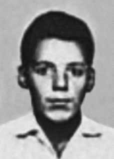

Carlos
Roberto
Zanirato
CIRCUNSTÂNCIAS DA MORTE
Carlos Roberto Zanirato tinha 19 anos quando foi morto por agentes do Estado brasileiro, em decorrência das torturas a que foi submetido no Departamento Estadual de Ordem Política e Social de São Paulo (DEOPS/SP).
De acordo com a versão oficial, Carlos Roberto havia sido preso no dia 23 de junho de 1969. Depois de ser submetido a interrogatório, Carlos teria revelado a informação de que tinha um encontro marcado (um “ponto”) com outros militantes. Conduzido pelos agentes ao local do suposto encontro, Carlos Roberto teria aproveitado um momento de descuido dos policiais e se atirado sob um ônibus que trafegava pela avenida. Ainda de acordo com essa narrativa, Carlos Roberto teria tido morte instantânea.
Passados mais de 40 anos, as investigações sobre esse episódio mostram que a versão oficial divulgada à época não se sustenta. Carlos Roberto Zanirato havia deixado o 4º Regimento de Infantaria, logo depois da decretação do Ato Institucional nº 5, de 13 de dezembro de 1968, para seguir o ex-capitão Carlos Lamarca e ingressar na luta armada na Vanguarda Popular Revolucionária (VPR). Cinco meses depois, foi preso por agentes do DEOPS/SP, quando saía de casa para ir ao cinema.
De acordo com a Informação n o 470/SNI/ASP, de 1o de julho de 1969, documento produzido pela Agência São de Paulo do Serviço Nacional de Informações, Carlos foi preso por agentes do 4º RI, a mesma unidade de onde havia desertado. Ademais, na requisição do exame cadavérico, com data de 29 de junho de 1969, Zanirato é identificado pelo nome. Apesar disso, de acordo com o Laudo Necroscópico nº 30.757, de 23 de setembro de 1969, assinado por Orlando Brandão e José Manella Netto do Instituto Médico-Legal do Estado de São Paulo (IML/SP), não havia dados sobre a qualificação pessoal de Carlos Roberto e o corpo examinado era o de um desconhecido.
O laudo registra ainda que o corpo apresentava um par de algemas com a corrente partida, ficando uma algema em cada pulso. Estas foram serradas, retiradas e entregues, mediante emissão de recibo, a Moacir Gallo, guarda civil nº 22.548. Todos esses detalhes revelam que o suposto suicida se encontrava preso, o que torna inverossímil que tenha sido considerado um desconhecido, conforme consta na solicitação de exame necroscópico. Tal situação fortalece a hipótese de que a real intenção dos agentes de segurança era a de ocultar seu cadáver.
Os relatórios dos ministérios da Marinha e da Aeronáutica entregues ao ministro da Justiça Maurício Corrêa, em 1993, confirmam sua morte como suicídio, e o da Marinha faz referências inclusive ao fato de que ele se encontrava algemado. Conforme Suzana Lisbôa, relatora do caso na Comissão Especial sobre Mortos e Desaparecidos Político, “o corpo [de Zanirato] parece não ter espaço onde não haja equimoses, escoriações ou fraturas. Todas as costelas fraturadas à direita, fratura do osso ilíaco, das clavículas, do úmero, ruptura do pulmão, ferimentos, escoriação plana de 20×30 cm na região lombar, etc.”
O corpo de Carlos Roberto Zanirato foi enterrado como indigente no cemitério de Vila Formosa, em São Paulo, e permanece desaparecido até hoje.
Carlos Roberto Zanirato was 19 years old when he was killed by agents of the Brazilian State, as a result of the torture he was subjected to at the São Paulo State Department of Political and Social Order (DEOPS/SP).
According to the official version, Carlos Roberto had been arrested on June 23, 1969. After being subjected to interrogation, Carlos revealed the information that he had an arranged meeting (a “point”) with other militants. Led by the agents to the location of the alleged meeting, Carlos Roberto allegedly took advantage of a moment of carelessness on the part of the police officers and threw himself under a bus that was traveling along the avenue. Still according to this narrative, Carlos Roberto would have died instantly.
More than 40 years later, investigations into this episode show that the official version released at the time is not sustainable. Carlos Roberto Zanirato had left the 4th Infantry Regiment, shortly after the decree of Institutional Act nº 5, of December 13, 1968, to follow former captain Carlos Lamarca and join the armed struggle in the Vanguarda Popular Revolucionária (VPR). Five months later, he was arrested by DEOPS/SP agents, when he was leaving home to go to the cinema.
According to Information No. 470/SNI/ASP, dated July 1, 1969, a document produced by the São de Paulo Agency of the National Information Service, Carlos was arrested by agents from the 4th RI, the same unit from which he had deserted. Furthermore, in the request for the cadaveric examination, dated June 29, 1969, Zanirato is identified by name. Despite this, according to Necroscopic Report No. 30,757, dated September 23, 1969, signed by Orlando Brandão and José Manella Netto from the Instituto Médico-Legal do Estado de São Paulo (IML/SP), there was no data on Carlos Roberto's personal qualifications and the body examined was that of an unknown person.
The report also records that the body had a pair of handcuffs with the chain broken, leaving one handcuff on each wrist. These were sawed, removed and delivered, upon receipt, to Moacir Gallo, civil guard nº 22,548. All these details reveal that the alleged suicide was arrested, which makes it unlikely that he was considered an unknown person, as stated in the request for a necroscopic examination. This situation strengthens the hypothesis that the real intention of the security agents was to hide his corpse.
The reports from the Navy and Air Force ministries delivered to the Minister of Justice Maurício Corrêa, in 1993, confirm his death as a suicide, and the Navy report even makes references to the fact that he was handcuffed. According to Suzana Lisbôa, rapporteur of the case at the Special Commission on the Political Dead and Missing, "[Zanirato's] body appears to have no space where there are no bruises, abrasions or fractures. All ribs fractured on the right, fracture of the iliac bone, clavicles, humerus, rupture of the lung, injuries, flat abrasion measuring 20x30 cm in the lumbar region, etc."
The body of Carlos Roberto Zanirato was buried as a pauper in the Vila Formosa cemetery, in São Paulo, and remains missing to this day.
Carlos Roberto Zanirato tenía 19 años cuando fue asesinado por agentes del Estado brasileño, como consecuencia de las torturas a las que fue sometido en el Departamento de Orden Político y Social del Estado de São Paulo (DEOPS/SP).
Según la versión oficial, Carlos Roberto había sido detenido el 23 de junio de 1969. Luego de ser sometido a un interrogatorio, Carlos reveló la información de que tenía una reunión concertada (un “punto”) con otros militantes. Conducido por los agentes hasta el lugar de la presunta reunión, Carlos Roberto supuestamente aprovechó un momento de descuido por parte de los policías y se arrojó debajo de un autobús que circulaba por la avenida. Aún según esta narrativa, Carlos Roberto habría muerto instantáneamente.
Más de 40 años después, las investigaciones sobre este episodio demuestran que la versión oficial difundida en su momento no es sostenible. Carlos Roberto Zanirato había abandonado el Regimiento de Infantería 4º, poco después del decreto del Acto Institucional nº 5, del 13 de diciembre de 1968, para seguir al ex capitán Carlos Lamarca e incorporarse a la lucha armada en la Vanguarda Popular Revolucionaria (VPR). Cinco meses después, fue detenido por agentes del DEOPS/SP, cuando salía de su casa para ir al cine.
Según la Información nº 470/SNI/ASP, de 1 de julio de 1969, documento elaborado por la Agencia São de Paulo del Servicio Nacional de Información, Carlos fue detenido por agentes de la 4ª RI, misma unidad de la que había desertado. Además, en la solicitud de examen cadavérico, de 29 de junio de 1969, se identifica por su nombre a Zanirato. Pese a ello, según el Informe Necroscópico nº 30.757, de 23 de septiembre de 1969, firmado por Orlando Brandão y José Manella Netto del Instituto Médico-Legal do Estado de São Paulo (IML/SP), no había datos sobre las calificaciones personales de Carlos Roberto y el cadáver examinado era el de una persona desconocida.
El informe también registra que el cuerpo tenía un par de esposas con la cadena rota, quedando una esposa en cada muñeca. Estos fueron aserrados, retirados y entregados, al recibirlos, a Moacir Gallo, guardia civil nº 22.548. Todos estos detalles revelan que el presunto suicida fue detenido, lo que hace poco probable que fuera considerado un desconocido, como consta en la solicitud de examen necroscópico. Esta situación fortalece la hipótesis de que la verdadera intención de los agentes de seguridad fue esconder su cadáver.
Los informes de los ministerios de la Marina y de la Fuerza Aérea entregados al Ministro de Justicia Maurício Corrêa, en 1993, confirman su muerte como suicidio, y el informe de la Marina incluso hace referencias al hecho de que estaba esposado. Según Suzana Lisbôa, relatora del caso en la Comisión Especial de Muertos y Desaparecidos Políticos, "el cuerpo [de Zanirato] parece no tener espacio donde no haya hematomas, abrasiones o fracturas. Todas las costillas fracturadas en el lado derecho, fractura del hueso ilíaco, de clavículas, de húmero, ruptura del pulmón, lesiones, abrasión plana de 20x30 cm en la región lumbar, etc."
El cuerpo de Carlos Roberto Zanirato fue enterrado como indigente en el cementerio de Vila Formosa, en São Paulo, y permanece desaparecido hasta el día de hoy.